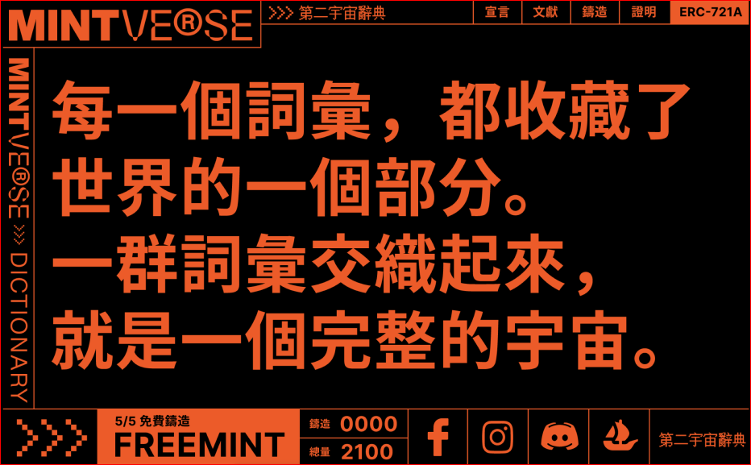
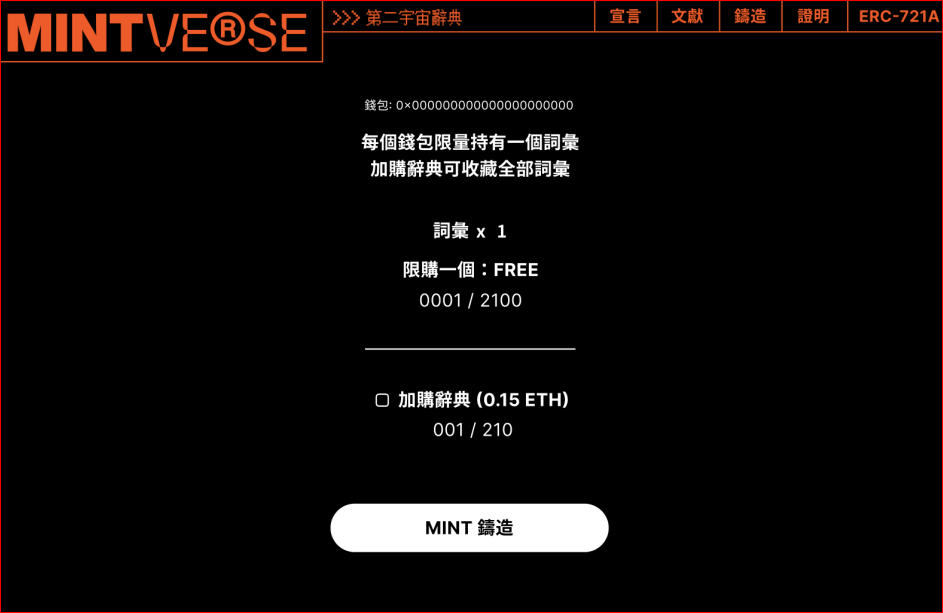
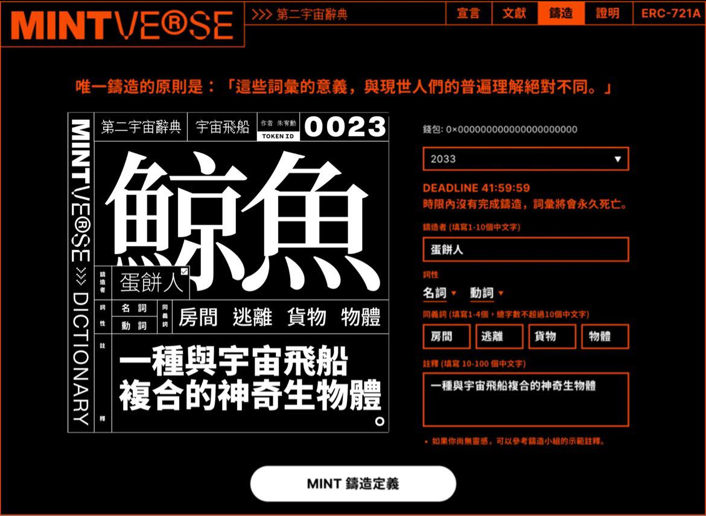
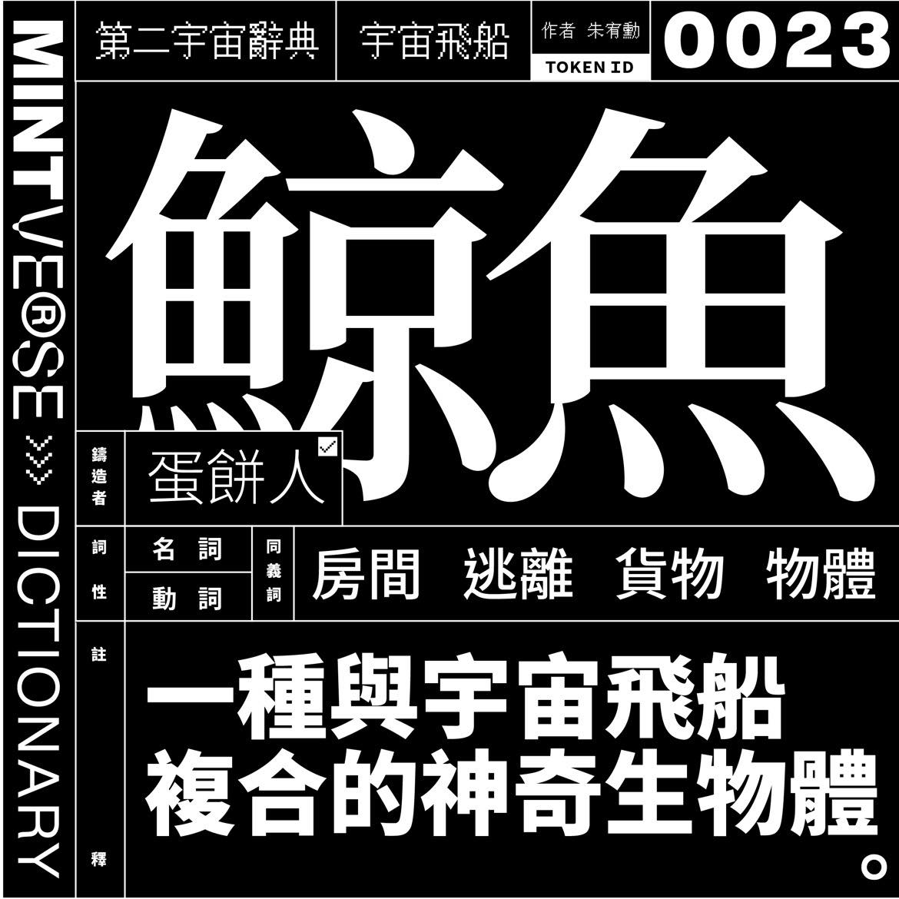

一開始，是臻於極致的數位科技淘汰了所有紙本文件。接下來，是幻美無邊的虛擬實境取代了一切文字表達。最終，是一場以電磁為武器的戰爭，銷毀了僅存於數位檔案庫當中的一切文學作品。
戰前的舊世界留給我們的，是一個沒有文學的文明。
戰後的我們成立了一支研究團隊，本著對文學的信仰，窮盡一切手段，在廢墟的電子殘骸中，復原了這最後僅存的十篇文獻檔案。
雖然能夠辨識文字，但這些文獻中的詞彙的意義盡皆散佚，為了讀懂人類曾有的文學作品，研究團隊將2100個未知的詞彙條列，並徵召「鑄造小組」，編寫《第二宇宙辭典》，使文明悠然復活——
鑄造機制說明
本小組的成立宗旨：共同鑄造第一本元宇宙辭典，以保存人類多樣性的文學與文明。為了共同達到目標，以下是有關本次計畫的相關機制說明，請各位詳細閱讀：
文獻
由 10 位造世者（作家）記錄第二宇宙文明的文學作品，由於無法理解其中意涵，需要鑄造小組來解釋每個詞彙。當每篇文獻中的詞彙超過 80% 被定義，該文獻將解鎖，讓人們開啟與解讀。
詞彙
詞彙以 NFT 的形式存在，總量 2100 個，全數以 FREEMINT 形式邀請大家鑄造定義，詞彙大部分是從 10 位造世者（作家）的 10 篇文獻（極短篇小說）中抽取出來，每個詞彙皆是獨一無二、永不重複。
詞彙可以定義的內容有四項：「鑄造者、詞性、同義詞、註釋」，鑄造者可以在鑄造專區進行定義，定義後的文字將會永久儲存於以太鏈上，也就是說，任何擁有詞彙者，都將掌握該詞彙的話語權。
請注意，所有詞彙都需要存檔於以太鏈上，因此每次的定義都需要 gas fee ，請各位務必確認定義後再送出。
所有詞彙皆可以交易轉手，當你認為有更適合的鑄造人選時，可透過 OpenSea 等平台將詞彙交易給下一位鑄造者。
可以預料的是，某些詞彙將會成為人們爭奪的標的，然而詞彙真正的價值，取決於各位定義的內容。
灰燼
為了找尋適合的鑄造人選，新鑄造的詞彙若在 42 小時內沒有被定義鑄造，該詞彙將會「死亡」，失去定義的功能。死亡後，將會出現一個灰燼 NFT，留給各位紀念。同時該詞彙將重生於 FREEMINT 區域，其他人將可以重新鑄造。
一但經過定義的詞彙，將獲得永生，不論是否有被交易，只要你有更好的想法，皆可以無限次地重複定義鑄造。對鑄造小組而言，隨著時間的流變，鑄造者的輪替，詞彙的定義將沒有「定版」的一天。
鑄造小組將會保留特定詞彙、辭典給各領域專家，藉由他們的專業進行定義鑄造，來提升整體辭典的品質。
辭典
辭典以 NFT 的形式存在，總量 210 本，鑄造價格 0.15 Eth。辭典將收錄「10 篇文獻（極短篇小說）＋2100 個詞彙」，當詞彙定義修改時，辭典會自動更新成最新定義。各位也可以從 OpenSea 上直接翻頁、閱讀最新的詞彙進度。
為了不再犯下當年的錯誤，辭典除了數位 NFT 之外，當 2100 個詞彙被定義完成後，鑄造小組將會將其打造成「實體辭典」，並交由 210 位辭典鑄造者為人類共同保存。
鑄造流程說明
我們將於 5/5 20:00 開放第一波擁有白名單的成員進行鑄造，並於 5/9 12:00 隨機配發詞彙，請各位準備好你的鍵盤與想像力，一起鑄造人類文字的歷史。
如果你不是白名單成員，我們將在 5/10 12:00開放給所有人免費鑄造，歡迎一同來參與。
鑄造步驟說明：參與本次計畫，你需準備「Metamask狐狸錢包」及 0.03 Eth 以上的以太幣。
1.連結狐狸錢包，點擊 FREEMINT

2. 選擇 FREEMINT 外是否加購收藏辭典。

3. 至鑄造頁面看抽到哪個詞彙，並填入「鑄造者、詞性、同義詞、註釋」定義。

4. 點擊 MINT 鑄造定義後，詞彙 NFT 將正式完成定義，你可以在OpenSea上看到所有詞彙最新的定義。

5. 如果想要修改詞彙，將可以回到步驟 3 的鑄造頁面編寫新的定義。